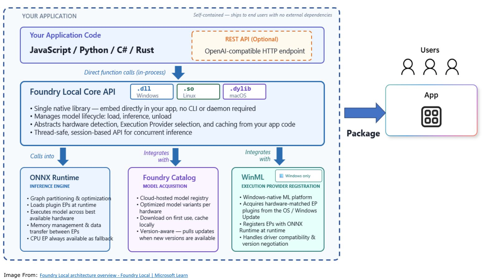
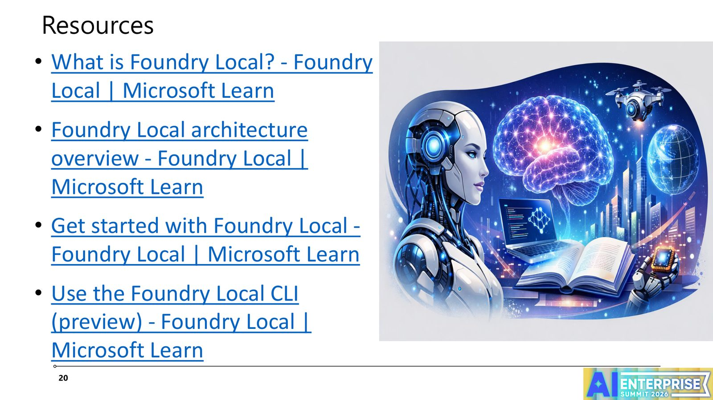

摘要
講者 Weithenn Wang 透過三個實機 Demo 情境，展示如何運用 Microsoft Foundry Local（本機執行的 AI 推論框架）驅動 Windows Server 2025 的維運工作，涵蓋自動化事件診斷、具人機協作（Human-in-the-loop）的主動記憶體優化，以及安全防禦與藍圖級自動修復三大場景。
重點整理
- 講者具備多年 Microsoft MVP、VMware vExpert、Nutanix NTC 資歷，並著有 19 本 IT 書籍
- Scenario 1：Local AI Automated Incident Diagnosis，示範用本機 AI 自動診斷伺服器事件
- Scenario 2：Local AI Proactive Memory Optimization，結合 Human-in-the-loop 機制主動優化記憶體使用
- Scenario 3：Local AI Security Defense & Blueprint-Level Auto-Recovery，展示安全防禦與藍圖級自動修復能力
- 內容以 Live Demo 為主，並提供 Foundry Local 官方文件與 CLI 使用資源供後續參考
重點圖片／架構圖


什麼是 Foundry Local
講者首先介紹 Foundry Local 的基本概念，這是 Microsoft 提供、可在本機端執行的 AI 推論框架，並引用官方架構總覽圖說明其運作方式，作為後續三個維運情境 Demo 的技術基礎。
Scenario 1：自動化事件診斷
第一個情境展示如何運用本機 AI（Local AI）自動診斷 Windows Server 上發生的維運事件，透過 Live Demo 呈現 AI 如何協助維運人員快速定位問題根因，減少人工排查的時間。
Scenario 2：具人機協作的主動記憶體優化
第二個情境聚焦在記憶體資源的主動優化，並特別強調導入 Human-in-the-loop（HITL）機制，讓 AI 在進行優化建議或操作時，仍保留人工確認與介入的環節，兼顧自動化效率與維運安全性。
Scenario 3：安全防禦與藍圖級自動修復
第三個情境展示本機 AI 在安全防禦上的應用，以及所謂「Blueprint-Level Auto-Recovery」，也就是依照預先定義的藍圖規格，在偵測到異常或攻擊後自動將系統狀態修復至預期規格，降低人工介入需求。
延伸資源
講者最後整理了一系列 Foundry Local 的官方學習資源，包括架構總覽、入門指南與 CLI（preview）使用說明，方便與會者會後自行深入研究並在自己的 Windows Server 環境中實作。